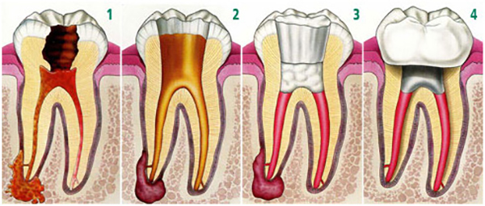

O tratamento de canal é indicado para resolver problemas relacionados com a parte central do dente, a polpa dentária. No passado, dentes com polpas comprometidas eram frequentemente extraídos. Atualmente, o tratamento de canal confere aos dentistas uma maneira segura de salvar dentes.
A polpa dentária é o tecido mole que contém nervos, vasos sanguíneos e tecido conjuntivo. Ela está localizada no interior do dente e se estende da coroa dentária à ponta da raiz dentária. A raiz dentária está inserida dentro do osso da maxila ou mandíbula.
Quando a polpa está doente ou sofreu lesões e não consegue se recuperar sozinha, ela necrosa. As causas mais comuns de necrose pulpar são fratura dentária ou cárie dentária profunda. Esses dois problemas podem permitir que bactérias entrem na polpa, causando uma infecção dentro do dente.
Se o problema não for tratado, forma-se uma coleção purulenta (pus) na ponta da raiz dentro do osso maxilar ou mandibular, chamada de abscesso. Um abscesso pode causar danos no osso ao redor do dente. Quando a polpa infectada não é removida, podem resultar dor e edema (inchaço). Alguns subprodutos da infecção podem causar lesões nos ossos maxilares. Sem tratamento, seu dente pode precisar ser extraído.
O tratamento de canal, pode ser realizado em sessão única ou em até 3 sessões, isso vai depender de uma avaliação realizada no inicio do tratamento. O tratamento de canal consiste na remoção da polpa comprometida, desinfecção da câmara pulpar e canal radicular e por fim a obturação do canal.
Um dente restaurado pode durar a vida toda se você continuar a cuidar dos dentes e gengiva. Entretanto, check-ups regulares são necessários. Uma vez que a raiz dentária de um dente tratado é nutrida pelos tecidos ao seu redor, seu dente permanecerá saudável.